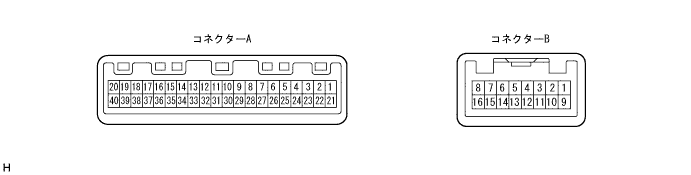
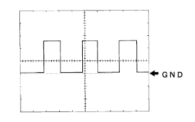

Input / output signal inspection
Using a SST (Toyota Electrical Tester), the connector is connected, and the tester stick is applied from the back of the vehicle wire harness side connector to inspect the voltage and conduction between each terminal.When checking the pulse, the oscilloscope is used.
- SST
- 09082-00030 09083-00170
Connector A Terminal symbol
[Terman number]Input and output item Measurement conditions standard Air Bag ← → Body Earth
[A1 ← → Body Earth]input Waveform Airbag warning lighting → off Short pulse (60 ± 5 ms) → Long pulse (130 ± 5 ms) P-Belt SW ← → Body Earth
[A2 ← → Body Earth]input Voltage IG Switch ON, passenger seat seat seat and seat belt removal → arrive 1V or less → 10-14V D-Belt SW ← → Body Earth
[A3 ← → Body Earth]input Voltage IG Switch ON, driver seat belt removal → arrive 1V or less → 10-14V A/T P ← → Body Earth
[A4 ← → Body Earth]input Voltage A/T P indicator off → lit 1V or less → 10-14V A/T R ← → Body Earth
[A5 ← → Body Earth]input Voltage A/T R indicator off → Light lit 1V or less → 10-14V A/T N ← → Body Earth
[A6 ← → Body Earth]input Voltage A/T N indicator off → lit 1V or less → 10-14V A/T D ← → Body Earth
[A7 ← → Body Earth]input Voltage A/T D indicator off → lit 1V or less → 10-14V A/T 2 ← → Body Earth
[A8 ← → Body Earth]input Voltage A/T 2 indicator off → lit 1V or less → 10-14V A/T L ← → Body Earth
[A9 ← → Body Earth]input Voltage A/T L indicator off → lit 1V or less → 10-14V O/D Off ← → Body Earth
[A10 ← → Body Earth]input Voltage O/D Off indicator lighting → Get off 2V or less → 10-14V Signal (E/G) Earth ← → Body Earth
[A12 ← → Body Earth]- Conduction Always There is an conductor BEAM- ← → Body Earth
[A13 ← → Body Earth]input Voltage Beam indicator off → lit 1V or less → 10-14V Fuel ← → Body Earth
[A14 ← → Body Earth]input Voltage IG switch ON, fuel full-sky 1V or less → 4-7V +B ← → Body Earth
[A15 ← → Body Earth]input Voltage Always 10-14V IG2 ← → Body Earth
[A16 ← → Body Earth]input Voltage IG switch OFF → ON 1V or less → 10-14V TEMP COOL ← → Body Earth
[A17 ← → Body Earth]input Voltage IG switch OFF → ON 10-14V → 1V or less TEMP HOT ← → Body Earth
[A18 ← → Body Earth]input Voltage IG switch OFF → ON 1V or less → 9-14V CHG- ← → Body Earth
[A19 ← → Body Earth]input Voltage Charge indicator lighting → off 4V or less → 10-14V TRC OFF ← → Body Earth
[A20 ← → Body Earth]input Voltage TRC OFF indicator lamp off → lighting 10-14V → 2V or less ILL+← → Body Earth
[A21 ← → Body Earth]input Voltage Tail switch OFF → ON 1V or less → 10-14V Key SW ← → Body Earth
[A22 ← → Body Earth]input Voltage There is no IG key in the key cylinder → Yes 10-14V → 1V or less P-Belt OUT ← → Body Earth
[A23 ← → Body Earth]output Voltage The passenger seat seat Belt warning flashing → Turn off 1V or less → 10-14V → 1V or less SPEED SI ← → Body Earth
[A24 ← → Body Earth]input Waveform Driving at 20km/h Pulse generation (waveform 1) SPEED SI ← → Body Earth
[A24 ← → Body Earth]input Voltage IG Switch ON, slowly turn the drive wheel 1V or less → 10-14V 4P out ← → Body Earth
[A25 ← → Body Earth]output Waveform Driving at 20km/h Pulse generation (waveform 1) 4P out ← → Body Earth
[A25 ← → Body Earth]output Voltage IG Switch ON, slowly turn the drive wheel 1V or less → 10-14V TACHO ← → Body Earth
[A26 ← → Body Earth]input Waveform At the time of engine rotation Pulse generation (waveform 2) CTY (D) ← → Body Earth
[A27 ← → Body Earth]input Voltage D seat door closing → Open 1V or less → 10-14V CTY (EXEPT D) ← → Body Earth
[28 ← → Body Earth]input Voltage Door closing other than the driver's seat → Open 1V or less → 10-14V EBD ← → Body Earth
[29 ← → body earth]input Voltage About 3 seconds after IG switch on 4-8V for about 3 seconds (then 1V or less) BRAKE LEVEL SW ← → Body Earth
[30 ← → body earth]input Voltage Brake level abnormality → normal 1V or less → 10-14V OIL P ← → Body Earth
[A31 ← → Body Earth]input Voltage Oil Pressure Warnin Grand Purification → Turn off 1V or less → 10-14V Fuel Earth ← → Body Earth
[A32 ← → Body Earth]- Conduction Always There is an conductor ABS ← → Body Earth
[A33 ← → Body Earth]input Voltage About 3 seconds after IG switch on 4-8V for about 3 seconds (then 1V or less) FR FOG ← → Body Earth
[A34 ← → Body Earth]input Voltage IG Switch ON, FR Fog Lamp Suitsu ON 1V or less → 10-14V Turn L ← → Body Earth
A [35 ← → Body Earth]input Voltage Turn left indicator off → blink 1V or less → 1V or less ← → 10-14V Turn R ← → Body Earth
[A36 ← → Body Earth]input Voltage Turn right indicator off → blink 1V or less → 1V or less ← → 10-14V BEAM+← → Body Earth
[A37 ← → Body Earth]input Voltage Always 10-14V Chk E/G ← → Body Earth
[A38 ← → Body Earth]input Voltage Check engine warning lighting → off (when the charge indicator is turned off) 3V or less → 10-14V VSC ← → Body Earth
[A39 ← → Body Earth]input Voltage IG switch OFF → ON About 2V for about 3 seconds or less 10-14V Slip ← → Body Earth
[A40 ← → Body Earth]input Voltage IG switch OFF → ON About 2V for about 3 seconds or less 10-14V Connector B Terminal symbol
[Terman number]Input and output item Measurement conditions standard Auto Leveling ← → Body Earth
[B6 ← → Body Earth]input Voltage IG Switch ON, headlamp auto -leveling warning lighting → turn off 2V or less → 10-14V
|  |
Waveform 1
| item | Content |
|---|---|
| Measuring terminal | SPEED SI, 4P out ← → Body Earth |
| Instrument set | 5V/Div, 10ms/Div |
| Measurement conditions | At the time of idle rotation |
- □ Participation □
- The shorter the vehicle speed, the shorter the cycle.
 |
Waveform 2
| item | Content |
|---|---|
| Measuring terminal | Tacho |
| Instrument set | 5V/Div, 10ms/Div |
| Measurement conditions | At the time of idle rotation |
- □ Participation □
- As the engine speed increases, the cycle becomes shorter.